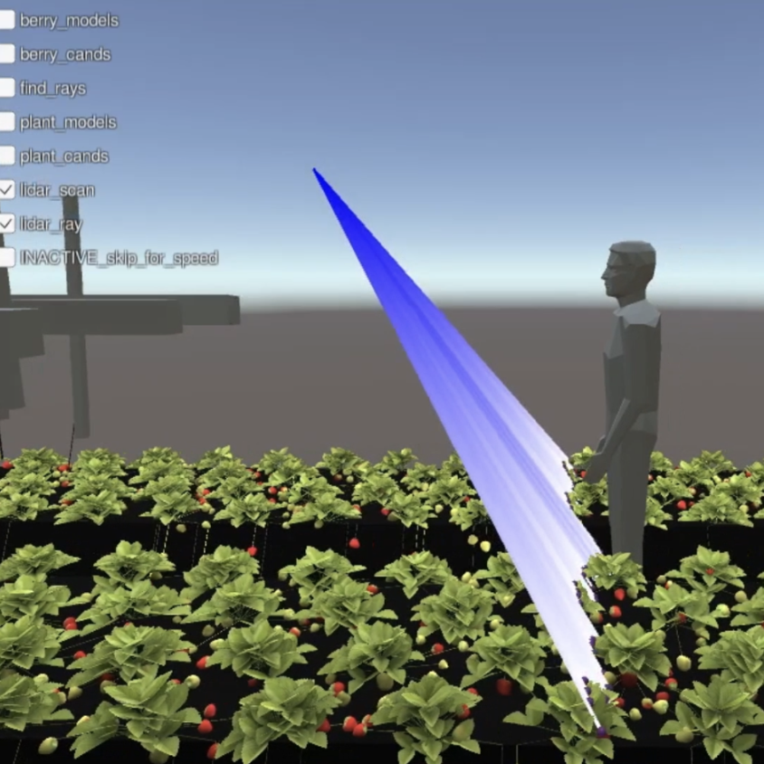
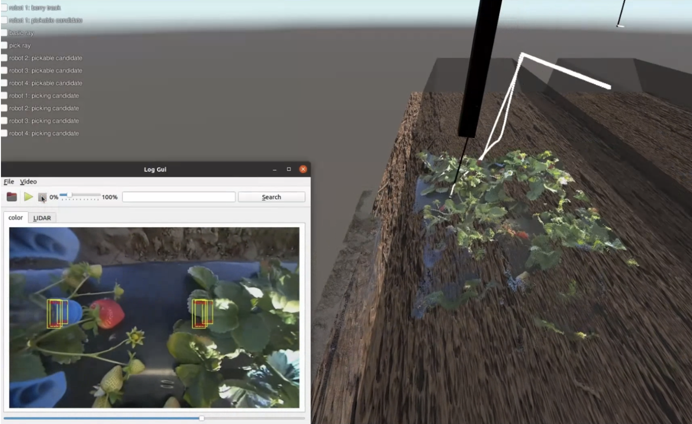
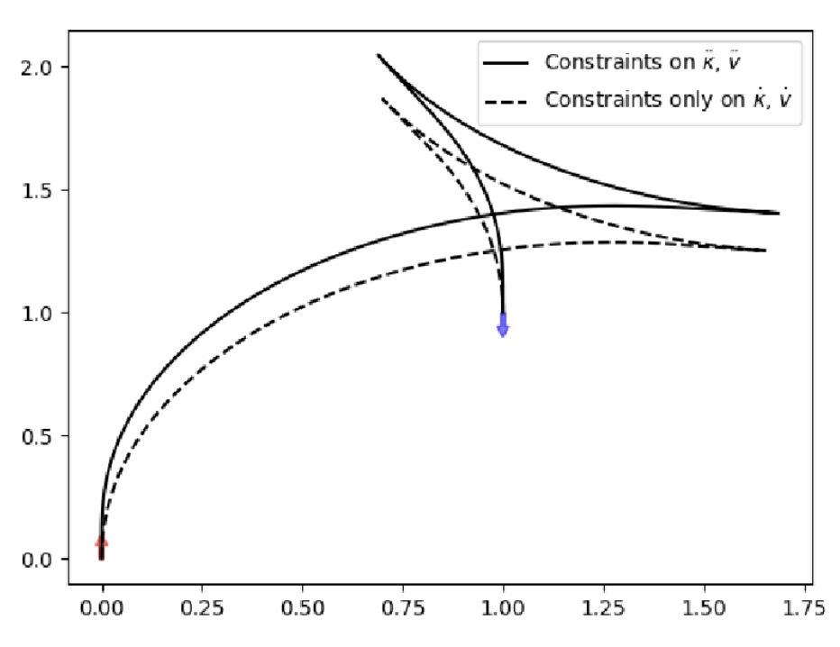
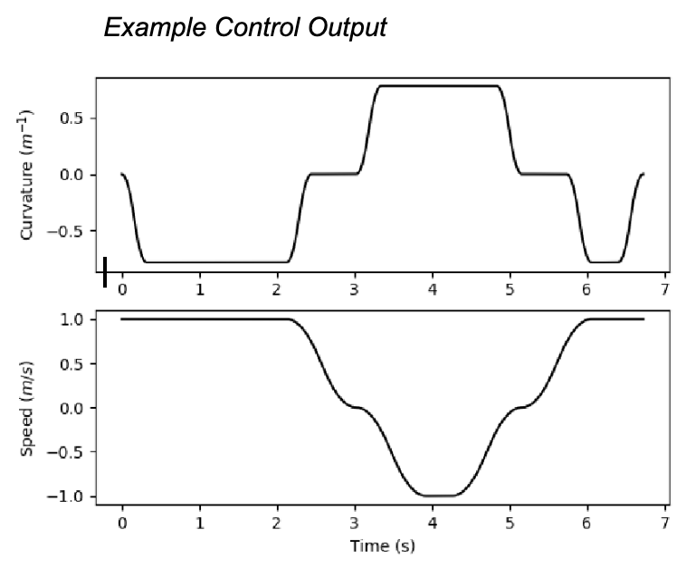
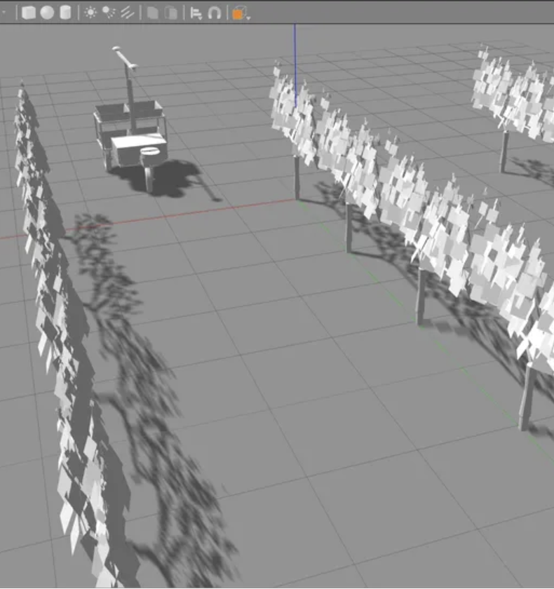

Rayne Milner's Portfolio
Dynamics, planning, simulation, and field robotics
01


Emulator Playback
Emulated Depth Sensors
- Implemented online rendering of depth for emulated lidar and RGB-D sensors.
- Utilized a compute shader to render depth on the GPU.
- Converted depth data in camera space to XYZ coordinates in global space.
- Employed to test the lidar and drive system, ensuring system safety.
- Used to render the physical camera's sensor output in a virtual environment.
02

Emulated Gripper Architecture
Unity Robotics Simulation
- Developed a robotics simulator using the Unity game engine.
- Integrated the simulator with the control system, machine learning stack, and sensor stacks.
- Utilized company-wide for development, deployment, and testing purposes.
- Led the development of the Unity simulation project over three months, managing a team of two engineers.
03


Example Control Output
Smooth Curvature Planner
Developed planning algorithms for non-holonomic robots that respect acceleration and jerk constraints.
Implemented multiple approaches:
- RRT*, an online NLP optimizer, and a heuristic approach based on scientific literature.
- Backman Approach: Constructs paths from elementary segments while adhering to constraints.
- OMPL Approach: Uses an off-the-shelf solver that incorporates state equations and constraints to generate planning outputs.
Tested the efficacy of these algorithms both in simulation and on hardware.
04


Robotic Dynamics Model and Simulation
- Created a dynamics model of a non-holonomic mobile robot for co-harvest applications.
- Developed the model using Python, Gazebo, and ROS nodes.
- Generated a URDF file from the CAD model.
- Fused simulated odometry and GPS data for accurate localization.
- Utilized the model to develop planning and control algorithms prior to hardware implementation.